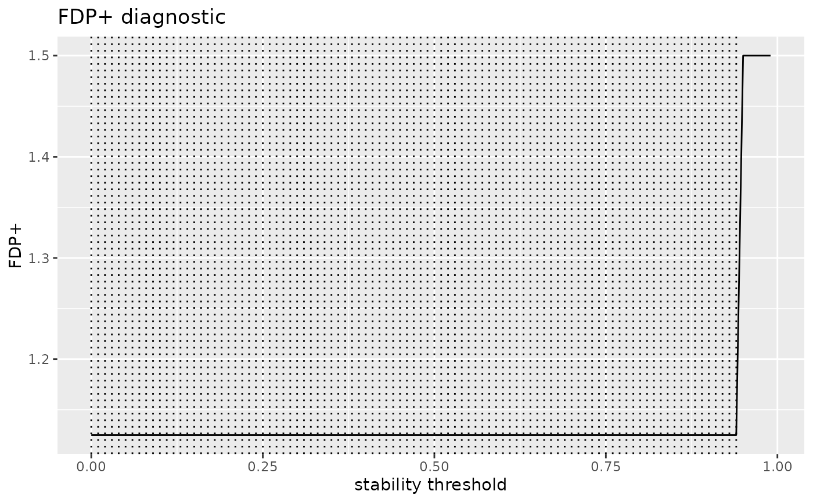

Plot STABL selection diagnostics
Arguments
- x
A
stabl_diagnosticsobject fromstabl_diagnose().- which
Character vector of panels to draw:
"fdp_curve"(FDP+ along the threshold range, with the selected cut-off and all minimizing thresholds marked),"threshold_path"(real vs artificial selection counts along the path), and"score_distributions"(survival curves, i.e. 1 - ECDF, of real and artificial per-feature maximum scores).- ...
Passed to plotting helpers; currently ignored.
Examples
if (requireNamespace("ggplot2", quietly = TRUE)) {
set.seed(1)
x <- matrix(rnorm(60 * 8), 60, 8,
dimnames = list(paste0("s", 1:60), paste0("f", 1:8)))
y <- setNames(x[, 1] * 2 + rnorm(60), rownames(x))
fit <- stabl_fit(x, y, n_bootstraps = 20, lambda_grid = "auto",
artificial_type = "random_permutation")
plot(stabl_diagnose(fit), which = "fdp_curve")
}
